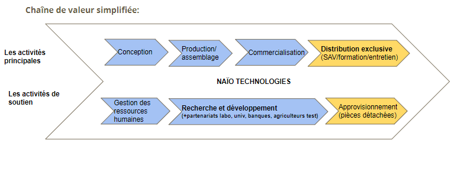

Naïo Technologies
L’activité principale de l’entreprise est la création de robots agricoles connectés totalement autonomes.
Plusieurs modèles sont développés pour pouvoir travailler dans plusieurs domaines agricoles (plantes aromatiques, horticulture, vignes, légumes).
Les robots développés par Naïo Technologies viennent en aide aux agriculteurs et ouvriers agricoles en les remplaçant dans la réalisation de tâches répétitives et pénibles telles que le désherbage, et en les accompagnant dans le transport de cagettes ou de fournitures.
Equipés de caméras, les robots sont en mesure de se repérer sur l’exploitation et de prendre des décisions de façon autonome.
Une carte SIM est installée dans chaque robot, elles servent à renseigner l’agriculteur sur l’état de la machine, il va recevoir un SMS pour l’informer que le robot n’a plus de batterie, qu’il est en fin de rangée, qu’il a fini son travail, etc.
Ensuite, elles servent à la maintenance des machines, dans la mesure où les techniciens vont être capables de remonter des codes de panne via la data.Grâce à un serveur qui récupère ces données, ils vont pouvoir analyser l'état des machines sans que cela implique l'agriculteur.
Activité primaire de l’entreprise :
- Réception et stock de matière première nécessaire à la fabrication des robots.
- L’équipement,la conception, l'assemblage, l’emballage des robots.
- Livraisons des robots / commercialisation.
- Marketing : faire connaître les produits aux clients (agriculteurs).
Activité secondaire de l’entreprise :
- Gestion des ressources humaines (recrutement).
- Recherche/développement(partenariat)
- Achats des matières premières négocier les prix / Apprivisionnement.
